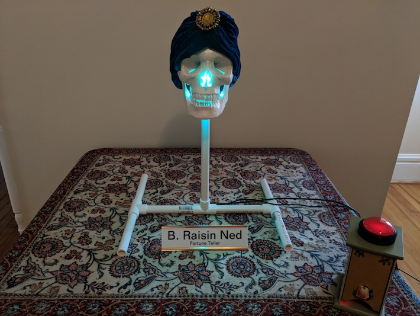
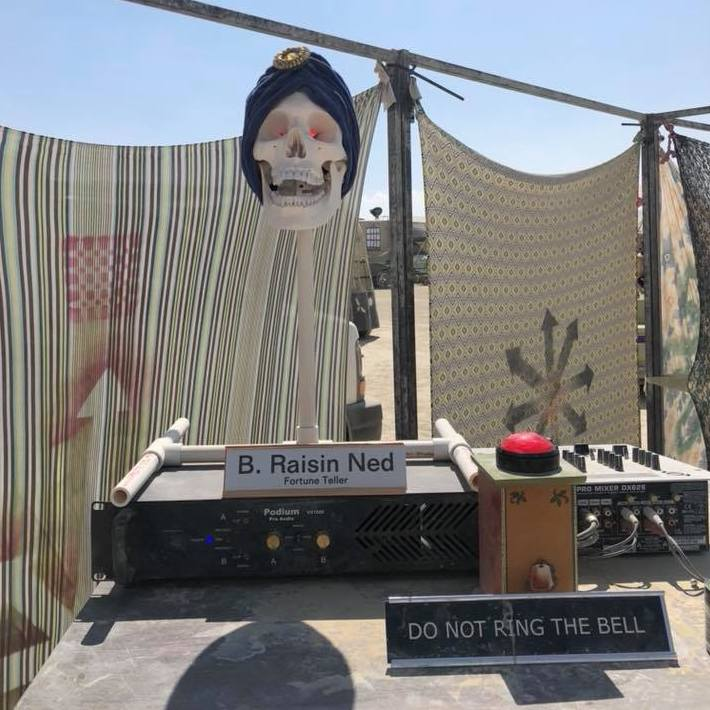

Inspired by brazen heads and fortune telling machines, this talking head gives fortunes based off of your current mental state, as determined by an EEG device attached to the receiver. Showcased at SPARKcon 2018 and Burning Man 2018.
 A pentatonic scale musical organ activated by capacitive touch sensor keys. The organ also shoots columns of fire based on the note being hit. Showcased at Burning Man 2017.
A wearable device running a Game of Life-esque simulation. Pixels darken as they age, preventing the simulation from hitting a steady state. Initial states are based off of light sensor input; thus this simulated universe is a deterministic function of ours, because "God does not play dice". Used to stay bright and blinky at Burning Man 2016 and 2017.